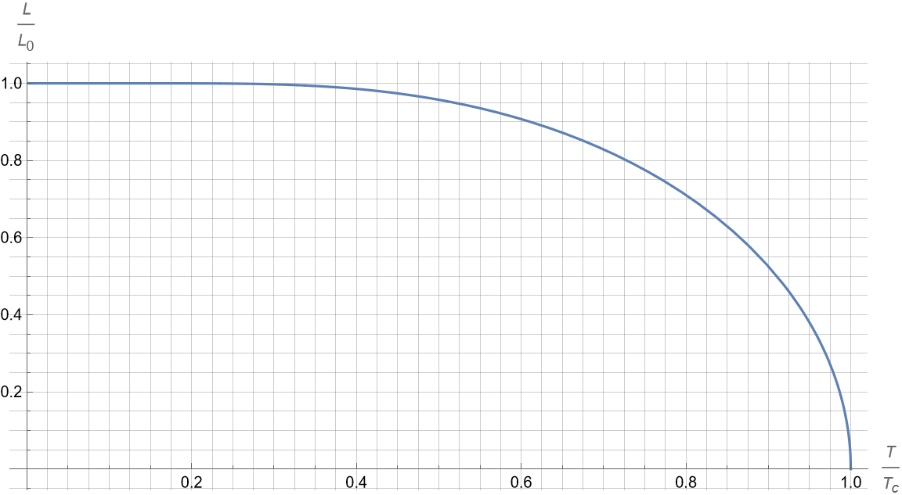
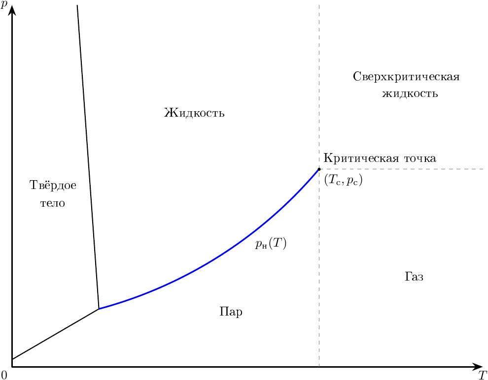

W24 (2024) — English translation
The simple iteration method (SI) is one of the simplest methods for numerically solving equations. To solve the equation using the MPI, it is represented as \[x=f(x).\]Substituting the initial approximation $x_0$ as an argument to the function, we obtain the first approximation $x_1$. Further, substituting $x_1$ as an argument to the function, we obtain the second approximation $x_2$, etc. The function $f(x)$ can always be chosen so that the difference between successive approximations decreases, and the result of the calculations becomes closer to the correct answer. The simple iteration method is convenient to use for numerically finding quantities that are given implicitly as a solution to some equation. Note: the problem uses the function $\operatorname{th}x$ - hyperbolic tangent. It is defined as \[\operatorname{th}x=\frac{e^x-e^{-x}}{e^x+e^{-x}}.\]It is easy to see that $|\operatorname{th}x| < 1$. The inverse of the hyperbolic tangent is denoted $\operatorname{arth}x$. Note: Throughout the problem, the letter $t$ represents the temperature at ${}^\circ\mathrm C$, and the letter $T$ represents the temperature at $\rm K$.
The simple iteration method is convenient to use for numerically finding quantities that are given implicitly as a solution to some equation.
Note: the problem uses the function $\operatorname{th}x$ - hyperbolic tangent. It is defined as \[\operatorname{th}x=\frac{e^x-e^{-x}}{e^x+e^{-x}}.\]It is easy to see that $|\operatorname{th}x| < 1$. The inverse of the hyperbolic tangent is denoted $\operatorname{arth}x$.
Note: Throughout the problem, the letter $t$ represents the temperature at ${}^\circ\mathrm C$, and the letter $T$ represents the temperature at $\rm K$.
In this problem we will consider the liquid–vapor phase transition. This transition is characterized by the specific heat of evaporation of the liquid $L$. In reality, the specific heat of evaporation depends on temperature. This dependence can be described with good accuracy by the Szymanski equation \[\frac L{L_0}=\operatorname{th}\left[\frac{L}{L_0} \frac{T_\mathrm c}{T}\right].\]The characteristic form of dependence $L(T)$ is shown in Fig. 1. Here $L_0$ and $T_\mathrm c$ are some quantities determined by the nature of the liquid. $L_0$ has the dimension of the specific heat of evaporation, and $T_\mathrm c$ is called the critical temperature of the liquid. We will find out the physical meaning of the critical temperature in the next part of the problem, but for now we will determine $L_0$ and $T_\mathrm c$ for water using the known values of $L(t)$.
Rice. 1 -- Characteristic type of dependence $L(T)$

Let us know the values of the specific heat of evaporation of liquid $L_1$ and $L_2$ at temperatures $T_1$ and $T_2$, respectively (to be specific, $T_2 > T_1$).
In the answer sheets you are given a table of pairs of dots $(t_1,L_1)$ and $(t_2,L_2)$ (one pair per line).
As you may have noticed, the specific heat of evaporation of a liquid decreases with increasing temperature, going to zero at a temperature above the critical one. Thus, the liquid-vapor transition at a temperature above the critical temperature would not imply a change in the interaction energy of molecules, i.e. liquid will be no different from steam. This state of matter at temperatures above $T_\mathrm c$ is called supercritical fluid. Moreover, at temperatures below $T_\mathrm c$, liquid and vapor are different phases of the substance. In coordinates $(p,T)$ (see Fig. 2), the boundary between them actually represents the saturated vapor pressure curve $p_\text{н}(T)$. The saturated vapor pressure satisfies the Clapeyron-Clausius equation \[\frac{\mathrm dp_\text{н}}{p_\text{н}}=\frac{\mu L}{R}\frac{\mathrm dT}{T^2},\]where $\mu$ is the molar mass of the substance $\big($for water $\mu_\text{в}=18.0~\frac{\text{г}}{\text{моль}}\Big)$, $R=8.314~\frac{\text{Дж}}{\text{моль}\cdot\text{К}}$ is the universal gas constant. Point $(p_\text{н}(T_\mathrm c),T_\mathrm c)$ is called the critical point of the substance. In this part we will try to estimate the pressure $p_\mathrm c=p_\text{н}(T_\mathrm c)$ at the critical point.
This state of matter at temperatures above $T_\mathrm c$ is called supercritical fluid. Moreover, at temperatures below $T_\mathrm c$, liquid and vapor are different phases of the substance. In coordinates $(p,T)$ (see Fig. 2), the boundary between them actually represents the saturated vapor pressure curve $p_\text{н}(T)$. The saturated vapor pressure satisfies the Clapeyron-Clausius equation \[\frac{\mathrm dp_\text{н}}{p_\text{н}}=\frac{\mu L}{R}\frac{\mathrm dT}{T^2},\]where $\mu$ is the molar mass of the substance $\big($for water $\mu_\text{в}=18.0~\frac{\text{г}}{\text{моль}}\Big)$, $R=8.314~\frac{\text{Дж}}{\text{моль}\cdot\text{К}}$ is the universal gas constant.
The point $(p_\text{н}(T_\mathrm c),T_\mathrm c)$ is called the critical point of the substance. In this part we will try to estimate the pressure $p_\mathrm c=p_\text{н}(T_\mathrm c)$ at the critical point.
Rice. 2 -- Phase diagram of water in coordinates $(p,T)$

Since $\dfrac{\mathrm dT}{T^2}=-\mathrm d\left[\dfrac1T\right]$, to find $p_\mathrm c$ it is convenient to plot $L\left(\dfrac1T\right)$ on graph paper and find the area $S$ under it.
Note: Count at least 20 points, try to cover the range uniformly. This will increase the accuracy of your further calculations.
Source: https://pho.rs/p/3495